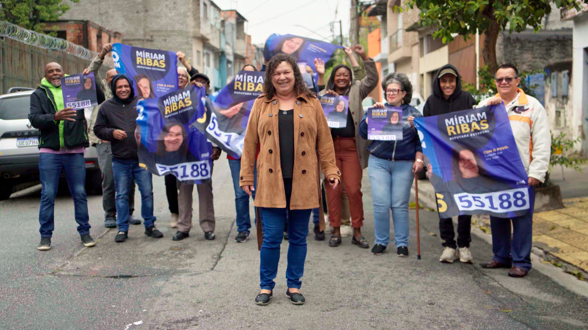

Da ação social à política: uma nova voz para as mulheres e para São Paulo

A candidatura de Míriam Ribas nasce de uma história construída junto à comunidade e da vontade de transformar essa experiência em atuação política.
Como candidata a deputada estadual pelo PSD, Míriam pretende defender políticas públicas que fortaleçam as mulheres, ampliem o acesso à saúde, estimulem a geração de emprego e renda e garantam mais proteção social. Sua proposta é levar para o debate estadual as necessidades que conhece de perto e atuar para que elas sejam ouvidas e consideradas nas decisões do Estado.
A força da mulher de Diadema no centro do debate
Moradora de Diadema há mais de 48 anos, Míriam viu de perto o que falta na vida de muitas famílias: dificuldade para gerar renda, despesas que não fecham, pouco apoio às mães solo, serviços que não chegam e a sensação de que o poder público não olha para quem mais precisa. Foi nessas questões que ela escolheu atuar, primeiro pelo Instituto Míriam Ribas e agora pela política.
Coordenadora do PSD Mulher em Diadema, ela defende que a presença feminina nos espaços de decisão muda a qualidade das políticas públicas. A candidatura busca justamente isso: levar a experiência de quem conhece os desafios enfrentados pelas famílias para a Assembleia Legislativa de São Paulo.
“Aceitei esse desafio porque acredito que uma boa política, feita com qualidade, compromisso e respeito pelas pessoas, pode transformar e até salvar vidas.” Míriam Ribas
Cinco compromissos
- Proteção e valorização das mulheres: rede de enfrentamento à violência mais forte e acesso aos serviços de acolhimento.
- Saúde pública de qualidade: investimento, fiscalização dos recursos e eficiência no atendimento.
- Emprego, renda e autonomia: qualificação, empreendedorismo e geração de renda, com atenção especial às mulheres.
- Recursos para os municípios: orçamento estadual e emendas chegando a quem mais precisa.
- Fiscalização e defesa dos direitos: acompanhar a execução do orçamento e cobrar serviços públicos transparentes.
As propostas completas, tema por tema, estão na página de Propostas.
Com o povo. Cuidado que vira ação.
O slogan da campanha resume o jeito de fazer da Míriam: estar perto, ouvir e responder com trabalho. A caminhada começa em Diadema, se estende pelo Grande ABC e quer chegar a todo o estado de São Paulo. Quem quiser fazer parte pode participar.
A trajetória de Míriam Ribas também foi tema de reportagem do portal Na Mídia: “Da ação social à política: Míriam Ribas coloca a força da mulher de Diadema no centro do debate estadual”.